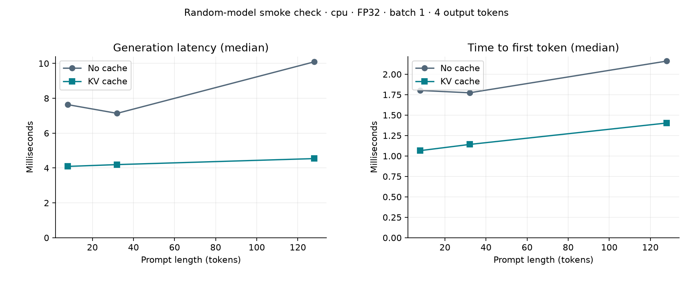
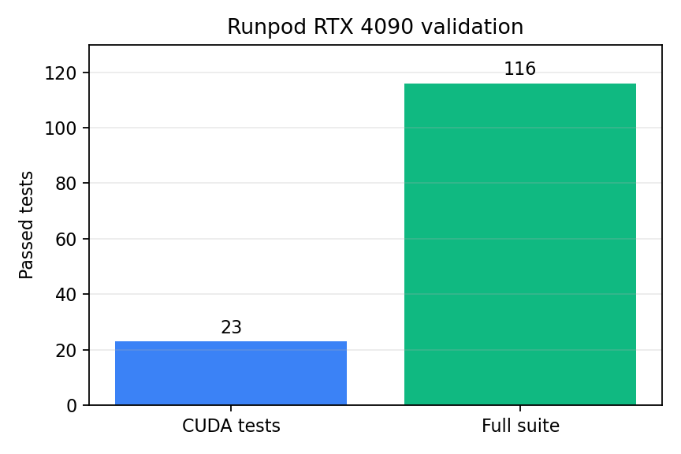

Transformer inference, measured one step at a time.
This page collects the local smoke results, Runpod RTX 4090 validation, KV-cache analysis, server load results, and the main project evidence in one place.
Runpod RTX 4090 validation
Baseline Smoke Result
Apple Silicon MacBook - CPU smoke experiment. Tiny random GPT-2, used to test the benchmark workflow.
RTX 4090 Validation Log
The CUDA validation was run on Runpod with an NVIDIA GeForce RTX 4090.
root@runpod:/workspace/MiniInfer# nvidia-smi
GPU: NVIDIA GeForce RTX 4090
Driver: 570.172.08 CUDA: 12.8
root@runpod:/workspace/MiniInfer# python -m pytest -v \
tests/test_rmsnorm.py::test_triton_against_reference_on_cuda \
tests/test_cache.py::test_cached_cuda_parity
23 passed in 67.79s
root@runpod:/workspace/MiniInfer# MINIINFER_TEST_COMPILE=1 python -m pytest -q
116 passed, 2 warnings in 1371.71sRunpod CUDA Analysis
This validation was run on a Runpod pod with an NVIDIA GeForce RTX 4090. It checks that the CUDA-specific code paths work on real NVIDIA hardware.
| Item | Value |
|---|---|
| GPU | NVIDIA GeForce RTX 4090 |
| Driver / CUDA | 570.172.08 / CUDA 12.8 |
| PyTorch | 2.8.0+cu128 |
| Triton | 3.4.0 |
| Native BF16 | Supported |
| Commit tested | d9630bf585a3512c5aec7f26a103ec0f7e889e73 |
| Run | Result | Meaning |
|---|---|---|
| CUDA-specific tests | 23 passed | Triton RMSNorm and cached CUDA parity worked on the RTX 4090. |
| RMSNorm CUDA cases | 21 passed | FP32, FP16, and BF16 Triton outputs matched the reference on tested shapes. |
| Cached CUDA parity | 2 passed | Cached decoding matched uncached decoding for small GPT-2 and Llama-style models. |
| Full suite | 116 passed | The complete project test suite passed in the CUDA Linux environment. |
KV Cache Analysis
Apple Silicon MacBook - CPU smoke experiment. This compares cached vs uncached decoding across prompt lengths.

Server Load Analysis
CPU smoke server. The optimized route uses request queueing, compatible dynamic batching, and KV cache.
Triton RMSNorm Kernel
This is the custom Triton RMSNorm path used by the kernel validation tests.
@triton.jit
def _rmsnorm(X, W, Y, WIDTH: tl.constexpr, EPS: tl.constexpr, BLOCK: tl.constexpr):
row = tl.program_id(0)
column = tl.arange(0, BLOCK)
valid = column < WIDTH
values = tl.load(X + row * WIDTH + column, mask=valid, other=0).to(tl.float32)
weights = tl.load(W + column, mask=valid, other=0).to(tl.float32)
mean_square = tl.sum(values * values, axis=0) / WIDTH
normalized = values * tl.rsqrt(mean_square + EPS)
tl.store(Y + row * WIDTH + column, normalized * weights, mask=valid)Validation Chart
Summary of the CUDA-specific and full-suite validation runs.

What This Proves
| Evidence | Claim supported | Claim not supported yet |
|---|---|---|
| RTX 4090 tests passed | CUDA paths, Triton RMSNorm correctness, and cached CUDA parity work on NVIDIA hardware. | End-to-end GPU speedup. |
| CPU smoke benchmark | The benchmark can measure TTFT, latency, throughput, memory fields, and reproducibility metadata. | Pretrained model quality or production GPU performance. |
| Server load smoke | The server routes, queueing, batching, and load-test reporting work. | Production serving capacity. |